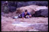
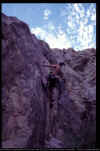

By Lee Cujes, November 1999
Last updated June 2011

| West End Quarry Climbing Guide |
By Lee Cujes, November 1999 Last updated June 2011 |
|
|
|
INTRODUCTION
West End Quarry is actually a series of about four small quarries which are located on the back side of Castle Hill (facing and visible from Mt Stuart). The quarries themselves are disused, and now their only function is an eyesore, a place for kids to throw off bottles, and a place to climb. I don't know the history of climbing here, although a few naturally protected routes had been done (presumably by John Blayke and perhaps others) but route info is unavailable. I have spoken with the ranger and be assured, climbing and bolting is allowed here. As you would imagine, the rock is characteristically loose, and a lot of cleaning and searching for solid rock is required for any good routes to appear. I climbed here when I didn't have transport to get to Mt Stuart and was desperate for a fix of rock, and as far as I know, not much climbing has been done here since.
|
ACCESS Located within minutes of the city centre, this area has easy access. Any Townsville map can show you how to get to the suburb West End, which is behind Castle Hill. Just drive down Stagpole Street to the end (the quarry is plainly visible here), and turn L up into the carpark near the gate. The map to the right shows how to get there. The pink lines show the positions of the walls, and the numbers refer to the areas described below. |
Note: Bolts in the routes described below are expansion bolts with their nuts glued in place. Treat them as
carrots and place your own brackets, but please note that only the larger 45 degree bolt
brackets will fit (not 90 degree, or small 45 degree). Use Adrenalin, SRT, RP,
or experiment.
AREA ONE
This is the main quarry you are looking at when you park. It is about 20-30m in height, very slabby, blocky, grassy, and fairly useless for climbing. Mark Gommers has installed three or four bolts at the top of the steep wall on the L side of the quarry, but has done no climbing here. John Blayke may have done some routes here. There are really only about three potential lines worth considering. The far L wall is broken and orange. A good 8m high line ascends the slightly overhanging corner and small headwall to a ledge and finish. The middle of the main wall has a large section of solid-looking rock which might be good, but requires a 15m scree-scramble. The most promising looking route is on the far R of the main wall. It would ascend good-looking rock past two diagonal cracks for 8m to a similar distance of smooth slab. A rap station would be required to rap off from the top of the slab.
|
Toby's Mum 14m 19 Basalt Assault 14m 18 Synergy 17m 20
Quark 16m 23 |
 |
|
Above: Lee on the first ascent of Synergy |
|
|
Above: Lee cranks the headwall on the first ascent of Synergy |
|
Crazy Like A Fox 16m 17
AREA THREE Much more wall space than Area Two. Area Three's main wall is also higher, at around 20m. The L-wall is mostly long slabs with an overhanging cave (no routes to date). The R-wall is a series of 10-15m sandstone-like walls with varying aspects (slight shade) and good route potential (none to date). The main wall has sections of 20m high granite which are particularly solid. The worst thing about the area is that it is in the sun almost all day (except under the awesome big tree at the base of the main wall slabs). However, the rock rarely gets too hot to climb on. The best time is early morning or late afternoon, or on a cloudy day. Please note that routes are listed from R-L. |
 |
|
Above: Lee onsighting the first ascent of Crazy Like A Fox, as loose rock showers those below |
Unnamed
The slabby wall below the diagonal roof (not the main roof) about 10m R of Solar Power. It's got some nice rock but turns to choss at the roof.
FTRA: Doug Hockly 9/99
Solar Power 18m 21
Excellent climbing with lots of protection options. Easy for the grade. Starts at the black wall below R-side of obvious overhang up high on Area Three's main wall. A cam slot to start, and then up steeply to BR at 5m. Slightly L and up to break. Up fine crackline (wires) to wide horizontal break. Don't get suckered R into the chossy corner, step up L to another break (various cams). Launch up L to jug on face (crux) and clip BR, then R up crack to finish.
Lee Cujes, Jason Shaw, Steve Baskerville 11/11/98.
| Above: Lee on the first ascent of Solar Power. The middle image shows the crux move. | ||
About 20m L of Solar Power's steep wall, the wall becomes a series of slabs. The next two climbs are located on these slabs. For an anchor, you may need to bring a separate rope as the trees are about 30m back from the edge at the base of Area Four.
Oven Roasted 20m 12
"It's not the worst climb in Townsville, but it's close" - Steve
Baskerville. Climbs the obvious fist-sized crack running up the slab approximately 30m L of Solar Power passing good pro and a lot of dirt to a final big wire slot and loose top out.
Jason Shaw, Steve Baskerville 19/11/98.
Too Hot To Stop 20m 15
A good moderate clip-up (take four brackets). Starts about 10m L of Oven Roasted under the shade of the tree. A manky start to the first BR is compensated by good climbing thereafter. Starting below the BR up high, climb broken rock to clip first BR at about 5m. R through scoop and up to second BR. Nice moves to third BR. Up slab above, then reach L to clip final BR. A short crux above the final bolt gives the top.
Lee Cujes, Philippa Newton, Steve Baskerville 25/11/98.
AREA FOUR
This is the wall above Area Three and is comparatively small. There are no routes here to date. A couple of routes could be cleaned out of the choss, but again, this area gets all-day sun. Of note is part of the main wall behind the tree which is highly water-washed to give it a Nowra-sandstone look. Very smooth and sustained with a blank, overhung top bulge. A route up this wall would be impressive.

{kind=link}
{kind=link}
{kind=link}
{kind=link}
{kind=link}
{kind=link}
{kind=link}
{kind=link}